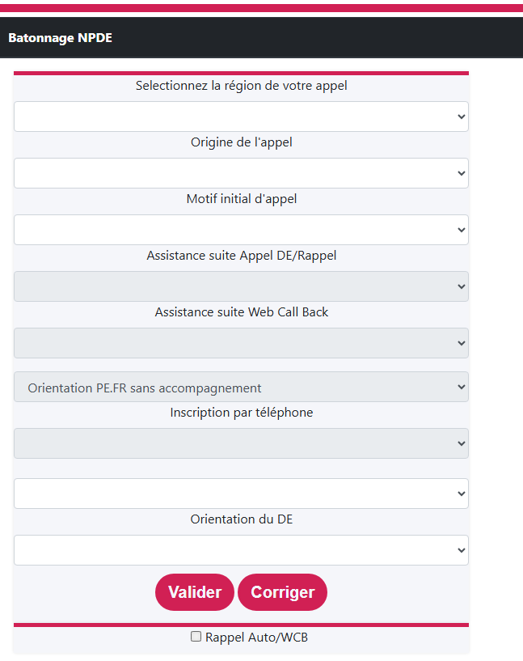
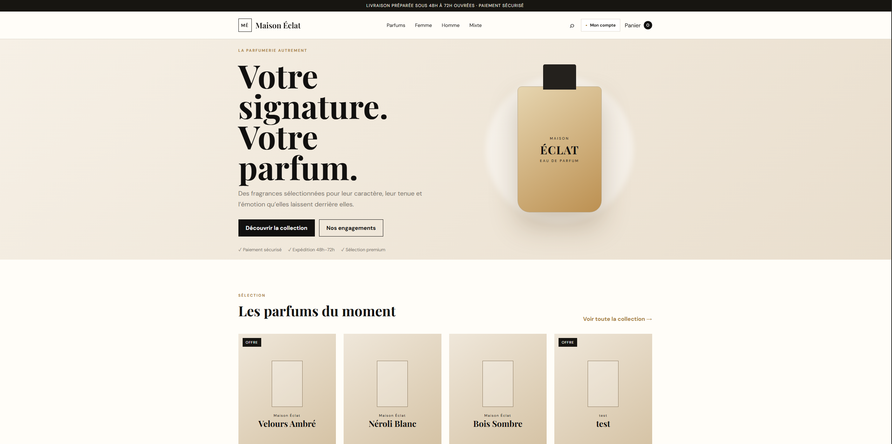

Front-end
- HTML5
- CSS3
- JavaScript
- Responsive Design
Je suis Mehdi AISSA, développeur web junior et aspirant Full-Stack, actuellement à la recherche d'une alternance afin de développer mes compétences et d'enrichir mon expérience professionnelle.
Front-end • Back-end • Full-Stack
Développeur Web Junior et aspirant Full-Stack, je m'intéresse particulièrement à la conception d'interfaces modernes, au développement d'applications web et à la création de solutions numériques adaptées aux besoins des utilisateurs.
Mon parcours m'a permis d'acquérir des bases solides en développement front-end et back-end, tout en développant une approche orientée vers la pratique à travers différents projets personnels, scolaires et professionnels.
Je souhaite aujourd'hui intégrer une entreprise dans le cadre d'une alternance, afin de continuer à progresser aux côtés de professionnels et de contribuer à des projets concrets.
Les technologies et outils que j'utilise ou que je développe actuellement dans mon parcours.
Un parcours construit autour de l'informatique, des mathématiques et de la pratique du développement.
Formation suivie en solutions logicielles et applications métiers. Diplôme non obtenu.
Première année universitaire suivie en mathématiques et informatique, sans revendication d'obtention de licence.
Spécialité Systèmes d'information et numérique.
Des expériences techniques et métiers qui nourrissent ma façon de concevoir des outils utiles.
Participation à la définition du cahier des charges et au développement local d'un outil destiné aux téléconseillers, comprenant une interface web et un formulaire dynamique de bâtonnage.
Accompagnement des équipes, rôle de référent métier et formation sur les campagnes d'appels. Une expérience concrète des usages et contraintes opérationnelles.
Téléconseil puis accueil bancaire : écoute, résolution de demandes et communication avec des publics variés.
Des réalisations personnelles et professionnelles. Les fonctionnalités décrites correspondent au code étudié ; les projets en développement sont identifiés comme tels.
Quiz web avec progression, niveaux et mode multijoueur reposant sur Supabase. Le code comprend la création et la participation à des sessions.

Interface de saisie et de suivi conçue pour les besoins de téléconseillers. Projet présenté comme réalisation de stage, sans divulgation de données professionnelles.

Application PHP/MySQL avec catalogue, panier, comptes utilisateurs et back-office. Les parcours de paiement et le déploiement en production ne sont pas présentés comme validés.
Site de présentation lié à la création de contenu, au streaming et aux technologies, avec plusieurs rubriques et une interface dédiée à la boutique.
Les emplacements visuels sont prêts : ajoute simplement tes images aux chemins indiqués. Les projets non publics ne disposent volontairement pas de lien de démonstration.
Comprendre comment concevoir, héberger, sécuriser et faire évoluer des applications web. Cette rubrique présente mes axes de recherche et des sources de référence ; elle n'invente pas de travaux de veille passés.
Je m'intéresse aux compromis entre hébergement traditionnel, services managés et approches serverless : coût, sécurité, maintenance, performance et simplicité de déploiement.
Étudier les services d'authentification, les bases PostgreSQL, les politiques d'accès et les fonctionnalités temps réel. Cas concret : QuizLab utilise Supabase pour son mode multijoueur.
Documentation Supabase ↗Comparer déploiement statique, hébergement PHP et automatisation via Git. Examiner les environnements de test et de production avant toute mise en ligne.
Documentation Netlify ↗Comprendre les échanges client-serveur, les API et les fonctions à la demande. Cas concret : Maison Éclat sert de support pour réfléchir à une application PHP avec base de données.
Ressources HTTP / API ↗Étudier la protection des clés d'API, les variables d'environnement, les autorisations côté serveur et les risques liés aux dépendances cloud.
OWASP Top 10 ↗Les futures fiches présenteront une source, sa date de publication, une synthèse personnelle, les avantages, les limites et les enseignements appliqués aux projets. Aucun article n'est artificiellement antidaté.
Je recherche une opportunité en développement web junior ou en alternance, pour progresser et contribuer à des projets concrets.
Une question, une opportunité ou une proposition de collaboration ? Écrivez-moi directement ici.
aissamehd@gmail.com Mes projets sur GitHub